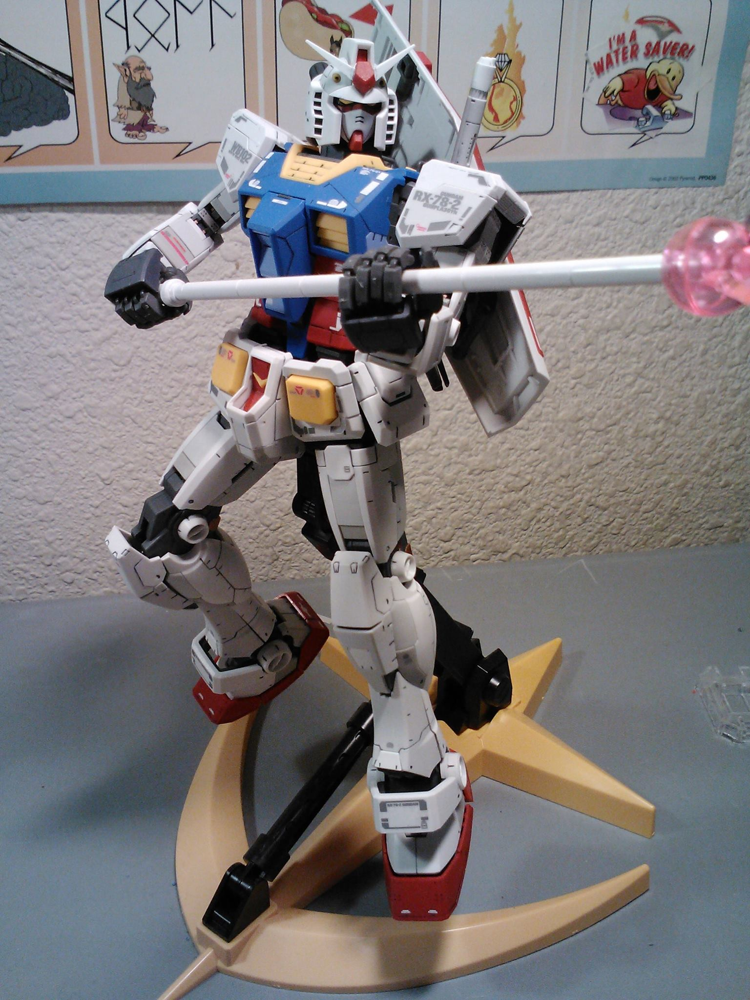

What is Gunpla?
 Gunpla is a portmanteau of "Gundam plastic model." These plastic model kits are of mecha and vehicles from the anime series Mobile Suit Gundam. Gunpla come in a variety of grades, usually referring to difficulty: High Grade, Master Grade, and Perfect Grade just to name a few. These kits an snap-fit: requiring no cementing.How to get started:
- Gunpla model kit
- Something to cut parts ✂